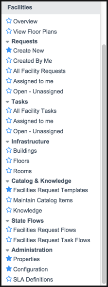

Facilities Service Management
| |
Note: This article applies to Fuji and earlier releases. For more current information, see Facilities Service Management at http://docs.servicenow.com
The ServiceNow Wiki is no longer being updated. Visit http://docs.servicenow.com for the latest product documentation. |
Contents
1 Overview
The Facilities application lets users request changes to the operation and maintenance of your facilities. The facilities staff can then track these requests and make the necessary changes. The benefits of facilities service management include:
- Indicating the exact location of a facilities request on a floor plan so the facilities team knows exactly where users encountered the issue.
- Identifying configuration items (CIs) for each facilities request so you know which items in your infrastructure are also impacted.
- Allowing any user in the system to view all open facilities requests. This gives your users a chance to see the facilities issues that have already been reported before they submit a new request.
| |
Note: Facilities Service Management replaces the earlier Facilities Management application starting with the Eureka release. Customers who are currently using the Facilities Management application can continue to use it after activating Facilities Service Management. However, Facilities Management cannot be activated after upgrading to Eureka or later releases. |
2 Facilities Service Management Process
After the facilities administrator creates records for each building, floor, and room in your organization, including specific floor plans, your employees can make requests that can be tracked to a specific room anywhere in any of the buildings.
The process is as follows:
- Users submit facilities requests using one of the following methods:
- from the facilities service catalog
- by tagging the location of the issue on a floor plan
- on the facilities request form
- Administrators qualify facilities requests (starting with the Fuji release). Qualifying a facilities request is the process of checking that the information in the request is complete so facilities tasks can be assigned.
- Administrators organize requests into tasks that need to be done to complete the request and dispatch the tasks (starting with the Fuji release).
- Facilities staff members perform the tasks necessary to fulfill the request.
- The assigned facilities staff members close their tasks, allowing the request to be closed (starting with the Fuji release).
3 Roles
| Role Title [Name] | Description |
|---|---|
| Facilities administrator
[facilities_admin] |
Facilities administrators can create and modify all buildings, floors, rooms, and floor plans. They can also qualify and dispatch requests. |
| Facilities staff
[facilities_staff] |
Performs the work necessary to answer facilities requests. |
| Facilities dispatcher
[facilities_dispatcher] |
Schedules and assigns the tasks to facilities staff (starting with the Fuji release). |
4 Menus and Modules
Activating this feature adds the Facilities menu to the application navigator with the modules listed below. It also adds modules to the Self-Service application menu.
|  | Under the Facilities application menu:
|
Under the Self-Service application menu:
|
{kind=link}
{kind=link}
| |
Note: The Facilities application also installs state flows for facilities requests and tasks in the State Flows application. |
5 Activating the Facilities Application
Facilities Service Management is available as a separate subscription.
To purchase a subscription, contact your ServiceNow account manager. After purchasing the subscription, activate the plugin within the production instance.
You can evaluate the feature on a sub-production instance without charge by activating it within the instance.
| Click the plus to expand instructions for activating a plugin. |
|---|
|
If you have the admin role, use the following steps to activate the plugin.
|
5.1 Activating Facilities Service Management for the the SM CMS Portal
Facilities Service Management can be added to the Service Management CMS portal by activating the following plugins.
| Plugin | ID | Description |
|---|---|---|
| Service Management | com.snc.enterprise_service_management.cms | Allows you to add SM applications, such as facilities service management to the Service Management CMS Portal. Activation of this plugin on production instances may require a separate license. Contact ServiceNow for details |
| Facilities Service Management CMS Portal | com.snc.facilities.core.cms | Displays the Facilities Service Management SM application on the Service Management portal. Activation of this plugin on production instances may require a separate license. Contact ServiceNow for details. |
6 Upgrading to SM-Based Facilities Service Management
The SM-based Facilities Service Management application replaces facilities service management (starting with the Fuji release). If you already have the Facilities Service Management application active in a pre-Fuji release, the system automatically upgrades the application to the SM-based version when you activate Service Management. All of your facilities requests are automatically migrated to the SM-based Facilities Service Management application. You do not need to perform additional upgrade tasks.
7 Enhancements
7.1 Fuji
- The facilities application is redesigned in a structure and workflow that is consistent with the work management application:
- Facilities requests can be organized into one or more tasks that can be dispatched to facilities groups.
- By default, the facilities request workflow sends requests through stages of acceptance and qualification before requests can be closed. Request tasks follow another default workflow that sends the tasks through dispatch, assignment, and acceptance before the task can be closed.
- Facilities Service Management is integrated with SM, which helps you manage settings for other SM-based applications, such as Work Management.
7.2 Eureka
- Facilities administrators can create records for buildings, floors, and rooms. These records allow facilities requests to be associated with a specific location in a building.
- Floor plans can be attached to building records. On floor plans, administrators can tag locations, such as conference rooms and cubicles. Users who submit facilities requests can specify one of these locations in the request.